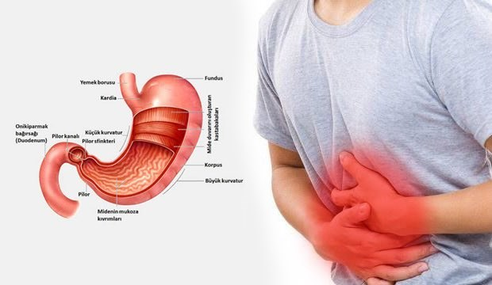
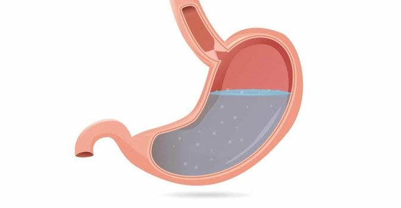

Mide Koruyucular Sizi Öldürür (mü?)
Kısa cevap: yakın zamanda doğrudan ölmenize sebep olmasalar da uzun vadeli etkileri kaliteli yaşam süresini kısaltma potansiyeli taşır
Mide koruyucu nedir? Ne işe yarar?
Bu yazıda halk arasında mide koruyucu olarak bahsedilen proton pompa inhibitörlerinden (PPI) bahsedeceğiz. Bunlara ilave olarak H2 reseptör antagonisti ilaçlar da benzer isimle anılmakta ve benzer etki yapmaktadır ancak PPI'lar kadar etkili bulunmadıklarından, onlar kadar sık kullanılmazlar.
PPI'nin temel görevi mide asidini azaltmaktır. Mideye asidini sağlayan proton pompalarına bağlanarak bunların çalışmasını engellerler. Bu etki geridönüşümsüzdür. Proton pompaları yenilenene kadar (yaklaşık bir hafta) mide asidi gerektiğinden daha az olacaktır. Buna bağlı olarak da bazı semptomların rahatlamasını sağlamaktadırlar.
Midenizde aktif bir lezyon varsa veya midenizin savunmasını aktif olarak azaltan bir ilaç kullanıyorsanız, PPI kullanımı sizin için zaruridir. Bunların dışındaki durumlarda kullanımı sorgulanmalıdır. Midenizde yanma olduğu için kullanıyorsanız (ki en sık kullanım nedenidir) yanmanın nedenine ulaşıp bunu düzeltmek sizi hem hastalığın kendisinden hem gereksiz ilaç kullanımından hem de mide asidinizi feda etmekten kurtaracaktır.
Mide koruyucuların nasıl bir tahribata yol açabileceğini anlamak için önce mide asidinin ne işe yaradığına bakalım.
Mide asidi nedir? Ne işe yarar?
Mide asidi mide parietal hücrelerinden salgılanan, sağlıklı kişilerde pH değeri 2-3 olan (kuvvetli asit) bir sindirim sıvısıdır. Bu asidik içeriği sayesinde mide kendisinden beklenilen fonksiyonları yerine getirebilir.
Mide içeriğinin bağırsak girişine yeterince asidik gelmesi sindirimin devamı için gereken pankreas ve safra salgılarının salgılanmasını uyarır.
Savunmanın İlk Kalesi: Mide Asidi
Vücutla temas eden dış kaynaklı maddelerin çok büyük bölümü sindirim sistemi üzerinden bize ulaşır. Sindirim sisteminde vücut adına yapılan en güçlü savunma mide asididir. Vücuda giren mikropların çok büyük bölümü mide asidi tarafından parçalanır. Mide asidinin yetersiz olduğu durumlarda bu mikroplar mikrobik açıdan normalde son derece korunaklı olan ince bağırsağa yerleşir ve çoğalır. Pek çok kişide lifli veya fermante gıda alımını takiben oluşan gaz, hazımsızlık hissi ve karın ağrısının sebebi yanlış yerde koloni oluşturan bu mikroplardır.
Bazı Vitamin ve Mineraller Asit Sever
Vücuda alınan mineral ve vitaminlerin bir kısmının vücut tarafından alınabilen formlara dönüşmesi mide asidinin asidik ortamında geçirdikleri değişiklik sayesinde mümkün olur. Demir, magnezyum, kalsiyum, vitamin B12 mide asidinden etkilenen mineral ve vitaminlere örnek olarak verilebilir.
Proteinler Sindirilemezse Düşmana Benzer
Proteinlerin temel sindirimi midede mide asidinin varlığında gerçekleşir. Mide asidi hem proteinleri denatüre eder (parçalar) hem de protein sindirimi için gereken pepsinojenin aktif forma dönmesini sağlar. Parçalanan proteinler ince bağırsağa aminoasit (proteinlerin yapı taşı) ve peptitlere (kısa aminoasit zincirleri) dönüşmüş olarak bağırsaklara geçer. Burada kalan peptitler de parçalanır. Ortaya çıkan aminoasitler vücutta yapı taşı olarak kullanılmak üzere bağırsaklardan emilirler. Mide asidi işini yeterince yapamazsa bağırsaklara geçen sindirilmiş içerik uzun zincirli aminoasitler barındırır. Bunun neye yol açacağını anlamak için iki temel bilgiye ihtiyacımız var. Birincisi vücuttaki savunma hücrelerinin %70 kadarı bağırsaklarda yer alır. İkincisi ise mikropların bağışıklık hücrelerince dost mu düşman mı ayrımına tabi tutuldukları kimlik yapıları (antijenler) uzun (8-12 parçalı) aminoasit zincirlerinden oluşur. Mide asidi işini yapamadığında vücut savunmasının büyük bölümünü oluşturan bağırsaktaki savunma hücreleri her gelen besin içeriğini düşman olarak algılar. Bu da vücutta kronik (uzun süreli) enflamasyon (yangı) meydana getirecektir.
Kronik Enflamasyon: Vücudu Yıpratmanın En Hızlı Yolu
Her ne kaynaklı olursa olsun kronik enflamasyon vücut tarafından kronik stres olarak yorumlanır. İster dişinizde devam eden bir çürüğünüz olsun, ister kimyasallara maruz kalın, isterseniz mide asidinizi baskılayın. Kronik enflamasyon varlığında kan kortizol seviyeniz yükselir. Vücudun savunma ve onarım faaliyetleri geriler. Zihinsel fonksiyonlar bozulur. Duygusal anlamda strese dayanım gücü azalır. Bağışıklık sistemi sürekli alarm halinde tutulur.
Bağışıklık sisteminin sürekli alarm halinde tutulmasının iki temel zararı vardır. Bunlardan ilkinde sürekli alarm halindeki bağışıklık hücreleri vücudun her tarafında normalde saldırmamaları gereken kendi hücrelerine de saldırırlar. Buna bağlı oluşan hastalıklara otoimmün hastalıklar denir. Bu hastalıkların nerede çıkacağı kişinin yatkınlığına göre değişir. Eğer beyinde yatkınlık varsa multipl skleroz (MS), Alzheimer, Parkinson vs, eklemde yatkınlık varsa romatoid artrit (RA), ankilozan spondilit vs, pankreasta yatkınlık varsa diyabet (DM) ortaya çıkabilir. Bu hastalıkların hepsi çok faktörden etkilenen hastalıklardır. Bu faktörlerin en başında ise kronik enflamasyon gelir.
Bağışıklığın sürekli uyarılmasının neden olacağı ikinci durum ise enfeksiyonlara yatkınlıktır. Enerjisini gereksiz yere harcayan bağışıklık sistemi sıklıkla temel düşmanı olan mikropları gözden kaçırır.
Enflamasyonun varlığı yapıca birbirine çok benzeyen üç bariyerde bozulmaya yol açar. Bunlar bağırsak bariyeri, cilt bariyeri ve kan beyin bariyeridir. Bozulmuş bariyer bütünlüğüne bağlı olarak bağırsak normalde filtre edebildiği toksinleri de kan dolaşımına almaya başlar. bu duruma geçirgen bağırsak (leaky gut) sendromu adı verilir. Kan dolaşımına giren bu toksinler bozulmuş kan beyin bariyerinden faydalanarak beyine ulaşırlar. Özellikle yağda çözünen toksinler beyni çok sever. Tüm bunların yansıması olarak da bozulmuş cilt bariyeri cilt lezyonları ve kaşıntılar ile kendini gösterebilir. Kana geçen bu toksinlerin kendileri de enflamasyonu körükler. Bu durum bir kısır döngü halini alır.
Ama Ben Bu İlacı Kullanıyorum. Ne Yapabilirim?
Öncelikle PPI kullanımı sağlığımız için gerekiyor mu? Bunu sorgulamalıyız. Kullanmadığımız durumda zarar göreceksek (midesinde lezyonu olanlar ve mide savunmasını bozan ilaçlardan kullananlar bu gruba giriyor) PPI kullanmayı bırakmamalıyız. Kullanımın zaruri olup olmadığına muhakkak doktorunuz ile karar vermelisiniz. Aksi halde ilacı bırakmaktan dolayı zarar görebilirsiniz.
İlacı bırakamıyorsanız, mide asidinizi öğünlerde desteklemeniz gerekir. Bunun da en iyi yolu yemek esnasında veya hemen sonrasında bir çorba kaşığı evde yapılmış elma sirkesi (hazır sirkelerdeki ilave edilen kimyasalları da istemiyoruz) tüketmenizdir.
İlacımı Bırakmak İstiyorum? O Beni Bırakacak mı?
Uzun süre PPI kullanmak midede azalan asit seviyesini arttırmak için beyin tarafından bolca gastrin (beynin mideye asit salgılama emri vermesini sağlayan hormon) salgılanması anlamına gelecektir. PPI kullanımını bir anda bırakmak mide asidinin istenilenden fazla salgılanmasına yol açabilir. Bu nedenle PPI grubu ilaçlar bir anda bırakılmazlar.
Bırakma prosedürü
- Çok yavaş bırakılır. Ne kadar uzun kullanılırsa o kadar yavaş bırakılır.
- Önce 2 gün alın 1 gün almayın. (2 hafta)
- Sonra 1 gün alıp 1 gün almayın. (2 hafta)
- Sonra 1 gün alıp 2 gün almayın. (1 ay)
- Sonra haftada 1 veya ihtiyaç oldukça alın. (1 ay)
Bu süreçte yanmalar oldukça antasit grubu (mide asidini kimyasal olarak azaltan) ilaçlardan kullanabiliriz. Bu ilaçları da yemek saatine yakın kullanmamalıyız.
Peki Bu Süreçte Bozulan Sistemler Ne Olacak?
Zararlı etkinin farkına vardıktan ve zararlı etkiden kurtulduktan sonra sıra onarıma gelecek. Bu süreçte bağırsakların onarımı, detosifikasyonun (zehirsizleştirme) desteklenmesi, stres ve buna bağlı hormonal aksın dengelenmesi ve enflamasyonun azaltılması temel hedefimiz olacaktır. Bu noktada alanına hakim bir hekim ve diyetisyen size büyük katkı sağlayacaktır.